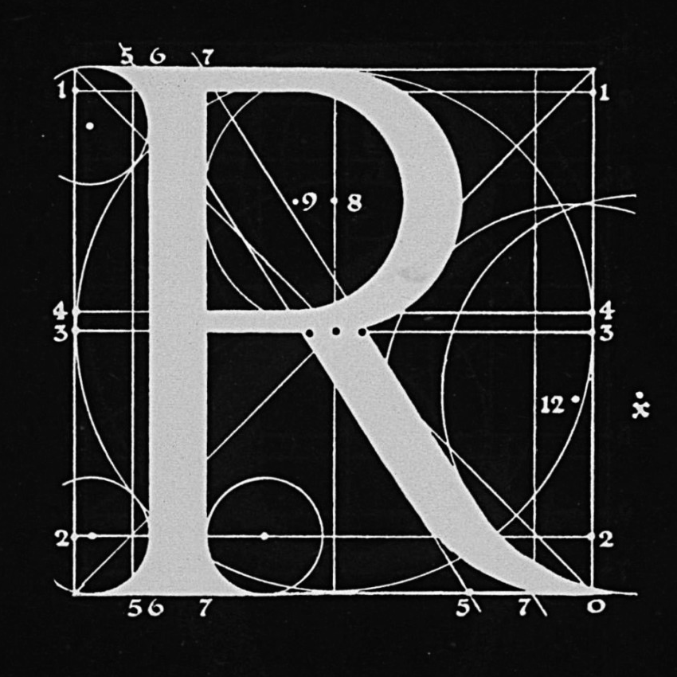

The antique letter R is made as follows. Make a circle and square marked off in divisions, the division at the foot, marked 2, being one unit in depth, and that at the top, marked I, one-third of a unit. Mark off a similar division above the diameter marked 3 to the line 4 and another similar
division on the right of the line s, marked 6. From the points 6, at the top and at the foot, mark off one unit to the points 7 and draw a line from 7 to 7. From the centre of the square measure half a unit to the left and half a unit to the right along
the diameter marked 3. These points are 56 marked as white spots. With the point 8 as centre and radius extending to the centre of the square, describe a circle. With the point 9 as centre and radius extending to the line marked 1, describe a circle which will touch the line marked 4. Then with your set-square draw a line from the white spot on the right to the point 7, at the foot and another line from the points to the white spot on the left. With the point X as centre and radius extending to the angle of the square marked o, describe a circle, and another circle with the point 12 as centre. Then at the foot describe two circles with radius of one unit from the centres marked and another similar one at
the top on the left (Verini 27).
BIBLIOGRAPHY
Verini, Giovam Baptista. Luminario; or, The Third Chapter of the Liber Elementorum Litterarum on the Construction of Roman Capitals.
Translated by A. F. Johnson, introduction by Stanley Morison, Harvard College Library, 1947.